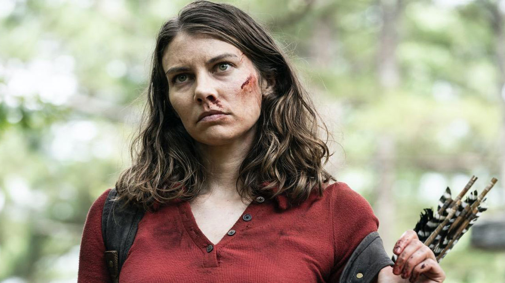
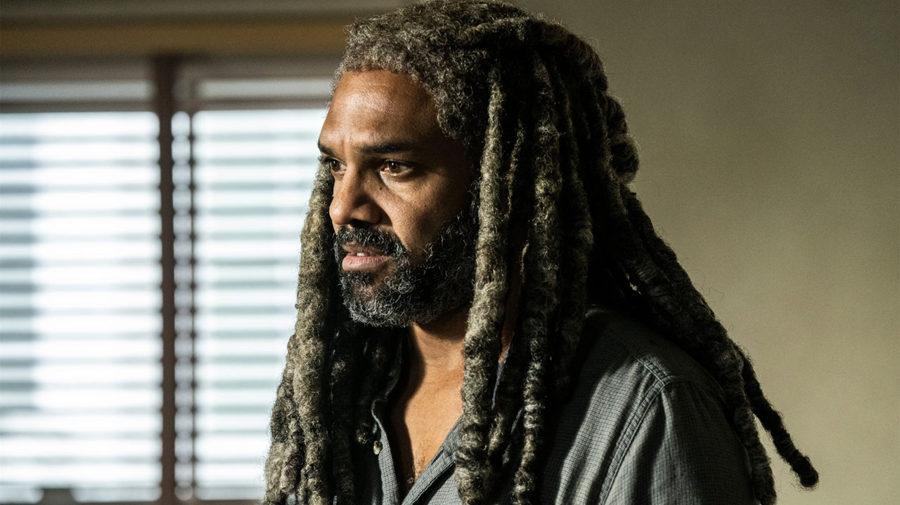

Novidades e Noticias Sobre TWD
 |
Novo teaser de The Walking Dead: Dead City destaca rivalidade entre Maggie e NeganThe Walking Dead: Dead City, a série derivada de The Walking Dead focada em Maggie e Negan, teve um novo vídeo promocional divulgado. Com cerca de 30 segundos de duração, o vídeo mostra um encontro violento entre Maggie e Negan, com direito a faca no pescoço e um pouco da trajetória deles até Nova York. |
|  |
The Walking Dead: Dead City muda o ator de um dos personagensO ator que interpretava o pequeno Hershel será substituído no spinn-off protagonizado por Maggie e Negan. |
|  |
The Walking Dead | Ator queria que Ezekiel tivesse uma morte épica na sérieKhary Payton, sente que pode ir além em nos mostrar mais sobre o passado e afins de Ezekiel, caso seu personagem ganhe série própria. Confira! |
 |
Fear The Walking Dead terá salto temporal de sete anos na temporada finalO passar dos anos em Fear The Walking promete mudanças tanto dos personagens, quanto do mundo apocalíptico que conhecemos! |
 |
Fear The Walking Dead | Divulgada data de estreia da 8ª e última temporadaA 8ª temporada de Fear The Walking Dead estreia dia 14 de maio de 2023. |
 |
The Walking Dead: Dead City terá os zumbis mais nojentos de toda a franquiaDeclaração de um dos produtores da série já serve de alerta para os mais "sensíveis". |